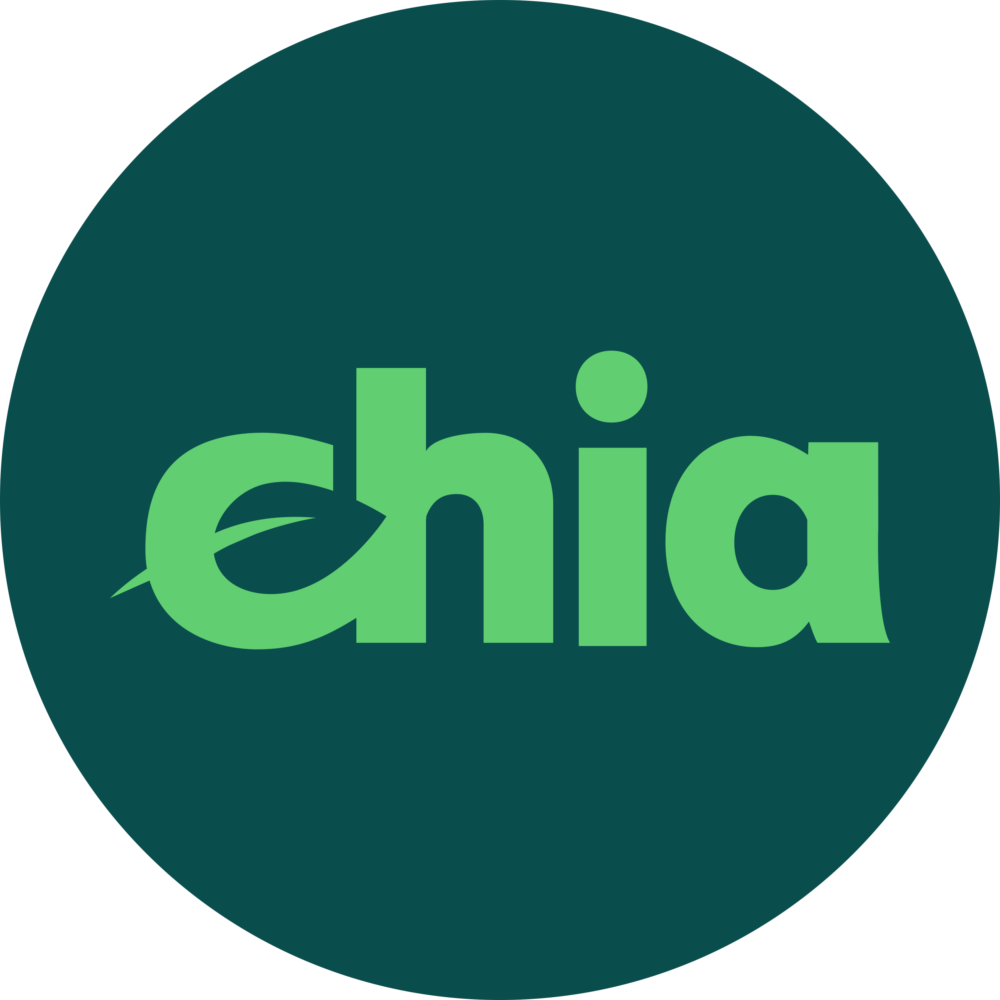
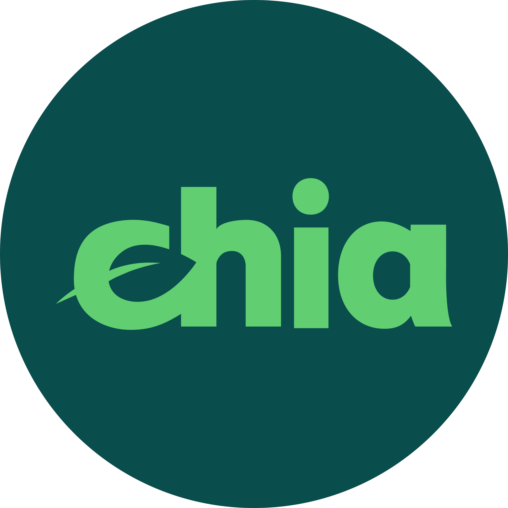

Bienvenue sur mon portfolio
Je suis EL MOUAFIK Titouan, étudiant en BTS SIO au lycée PERGAUD. J'ai 18 ans et je suis passionné par l'informatique depuis 1 ans .
CV
Mon CV est disponible en téléchargement.
Moocs et certifications
-
mooc ANSSI
informations pour vous initier à la cybersécurité, approfondir vos connaissances, et ainsi agir efficacement sur la protection de vos outils numériques. Ce dispositif est accessible gratuitement. Le suivi intégral de ce dispositif vous fera bénéficier d’une attestation de réussite.
-
mooc CNIL
sensibiliser les professionnels à la protection des données et d’accompagner leur mise en conformité. Dans cette nouvelle version, la CNIL propose un nouveau module dédié aux collectivités territoriales.


Formations
-
lycée Jules Haag Besancon
Diplôme obtenu: BAC GENERALE spécialité MATH/PHYSIQUE
formation en cours:
BTS SIO option SLAM
Projets:
-
NFT
avec l'aide d'une equipe de 5 personnes ayant un role attitré, nous avons monté une collection nft contenant 10000 item, ce projet m'as permis de comprendre les notions clés d'un projet en equipe, de plus le projet m'as permis de developper mes competences en WEB, mais aussi mes compétences en cryptommonaie avec la redaction et l'application d'un smart contract
Technologies utilisées: BLOCKCHAIN POLYGON
LUCKYDRAGONPALACENFT
ETHEREUM/XCH
accompagné de deux investisseurs, j'ai réalisé le montage d'une microferme de minage de cryptommonaies. ce projet m'as permis de comprendre les fondamentales de plusieurs BLOCKCHAIN, nottament la blockchain ETHEREUM ainsi que la blochain XCH, cette microferme de minage etait constitué d'une petite centaine de GPU ainsi que de stockage (+-1 petaoctect)
Technologies utilisées: BLOCKCHAIN XCH/ETHEREUM
 

- ...
Veille technologique
L’atout principal de la veille technologique est d’identifier ou d’anticiper des innovations par secteurs d’activité. Les sources de veille technologique constituent une information stratégique incontournable pour devancer, développer et exploiter des inventions.
Conférences auxquelles j'ai assisté
Projets que j'ai suivis
Expérience professionnelle
-
Nom de l'entreprise
Dates de début et de fin
Description du poste
Responsabilités
- ...
Passions
Passioné par le VTT de descente et le snowboard, je réalise a chaque saison d'hiver ou d'été un voyage dans les Alpes
de plus, le